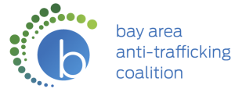
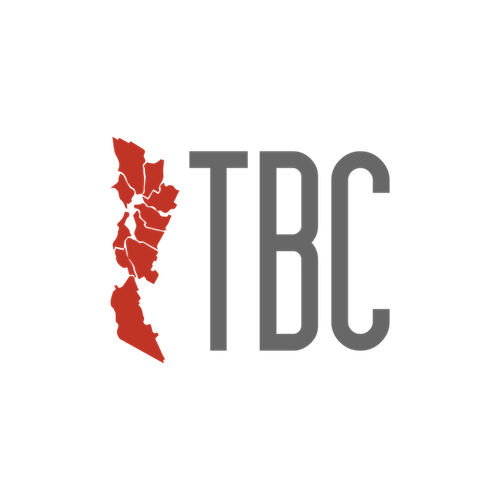

An app for detecting early child depression.
About
What is Code for the Kingdom?
Are you an entrepreneur, technologist or innovator? Have you ever wanted to impact your cities, circles and communities and solve problems that you see around you? Have you ever wanted to be the change? If yes, join us on November 13-15, 2015 for the Bay Area's third Code for the Kingdom Hackathon, hosted by Venture Christian Church.
Code for the Kingdom is a weekend Hackathon series and ongoing ecosystem where the challenges confronting our communities, our society, our families, and our spiritual lives are tackled from a Christian perspective. The movement hosts weekend gatherings in different cities where developers, designers, ideators and others collaborate to advance common good and serve God’s Kingdom.
This third Code for the Kingdom in the Bay Area builds upon the success of previous hackathons, which have already gathered over thousands of technologists to create hundreds of projects to do good. This Bay Area collaboration will leverage the skills and insights of our entrepreneurs, designers, and technologists to foster an entrepreneurial culture with Christian values and activate technologists to give their skills and some time as their contribution to the mission field.
Join some of the most talented developers, designers, entrepreneurs, and creative people in the country as they collaborate with each other to create innovative technology. All of these groups will also work with investors, mentors, innovative non-profits and churches to come up with ideas and projects to help release the oppressed, teach God’s word, heal the sick, feed the hungry, clothe the naked and support the Church and the body of Christ.
Join us this November 13-15 and let’s create technology that matters.
WINNERS
Here are the winners.
People's Choice
Best of started at the hackathon
An app to capture the story of God’s promises in your life.
Runner-up started at the hackathon
Bring small groups intimately together through prayer.
Best of started before the hackathon
An app to help us learn how to read the Bible while reading through the Bible.
Runner-up started before the hackathon
Bring Christianity and spiritual dynamics into Slack. Slackin' Church is a powerful add-on for church communities. Slack itself is already the best tool for team-based communities and communication. Slack + Slackin' Church will make for a wonderful community experience.
Look up any single Bible passage, or multiple passages, using bible: John 3:16; Genesis 1:1 (separate with semi-colons) Intelligently parses Bible verses using common abbreviations so that bible: 1 Cor 13:4-7 also works. Participate in collaborative Bible studies. With Slackin' Church you can Participate in collaborative Bible studies. Churches can offer Bible-in-Slack to read Scripture together during the sermon portion of a worship service. When the pastor says, "Turn with me to BOOK CHAPTER:VERSE," one person types it in, and the whole congregations is already there. Finally, a Bible lookup that is faster than a physical Bible and any app out there (today, I still flip through my Bible to a particular passage than I can with the YouVersion Bible app). Or you can share prayer requests, manage and keep track of prayer requests for your small group or accountability groups right in Slack.
Best Use of Digital Bible Platform
Scripture memorization assistant app.
Mentor's Choice Award
Technology responding to the challenge by Transforming the Bay with Christ. Local organizations meeting the needs of neighborhood schools.
Schedule
Friday November 13th, 2015 |
|
|---|---|
| 7:00 PM | Doors Open |
| 7:00 PM - 8:00 PM | Hors D'oeuvres & Networking |
| 8:00 PM - 8:25 PM | Welcome & Review Format |
| 8:25 PM - 8:35 PM | API Presentations |
| 8:35 PM - 8:50 PM | Review - Official Challenges |
| 8:50 PM - 9:20 PM | Open Floor - pitch your own project |
| 9:20 PM - 11:59 PM | Team Formation/Create Away |
Saturday November 14th, 2015 |
|
|---|---|
| 12:00 AM - 11:59 PM | Hacking |
| 8:30 AM | Breakfast |
| 10:00 AM | Reboot and Rally |
| 12:00 PM | Lunch |
| 6:00 PM | Dinner |
| 9:00 AM - 5:00 PM | Meet the Mentors |
Meet with Mentors is a great opportunity to connect with industry experts who can guide you and your concepts. The organizers will help you connect with mentors of your choice on Friday/Saturday.
Sunday November 15th, 2015 |
|
|---|---|
| 12:00 AM - 2:15 PM | Hacking |
| 8:30 AM | Breakfast |
| 10:30 AM - 11:10 AM | Sunday Service |
| 12:00 PM | Lunch |
| 1:00 PM | Presentation Walk-thru & |
| 2:30 PM | Team Presentations Begin (3 min max presentation, 2 min max Q&A) |
| 5:00 PM | Awards Ceremony |
| 5:30 PM | Closing |
Challenges
Here are the challenges to get you started. Please remember that more challenges may be presented on the first day of the Hackathon.
In case you are already interested or working on a project, don’t change course. But please keep in mind that your project must be aligned with the spirit of the Hackathon: Transforming the Bay and Beyond. Please come prepared to pitch your project at the Hackathon so that you can recruit teams to work on them.
10-10-10 to fight human trafficking
Many of us feel called to being part of the fight against human trafficking. Yet, the majority of us do not know what we can do. The Bay Area Anti-Trafficking Coalition has been working with individuals, civic groups and non-profits to sustainably fight trafficking with the 10-10-10 philosophy. 10-10-10 encourages people to ask themselves what they can do in 10 minutes, 10 days and 10 months to fight trafficking, and then write ideas down, talk them over with family and friends, and commit time to act on those ideas.
You can create technology to help people create their own 10-10-10 either by selecting tasks from a growing suggested and vetted list from BAATC and other organizations, or by creating their own unique ideas. Your technology can allow individuals to create 10-10-10 challenges not only for themselves but for family and friends. What if you could create a way for a 10-10-10 challenge movement to go viral?
Champions
Adopt a School with TBC
Transforming the Bay with Christ is leading a coalition of business leaders, venture capitalists, pastors, and non-profit leaders, to activate a grass roots movement that will transform the Bay Area through social compassion and service. One of the initiatives that TBC is fostering is the adoption of each school in the Bay Area by a church, a non-profit, or a business with the intention of serving as a champion that would voice and help meet the need of the adopted school.
You can create technology to help this vision become a reality. Your creation could map and help identify schools that are not yet adopted. It could also map the level and frequency of engagement that the adopting organization is giving on an ongoing basis to foster the relationship with the school and met the need. It is not enough to mark a school as adopted; adopting is just the beginning of a growth journey towards health and excellence.
Likewise, you can create technology to activate other parts of the TBC movement to collaborate with the adopting organization to meet the need of the school. And so much more.
Champions
Read Scripture by Francis Chan
Help Francis Chan and Crazylove bring the Read Scripture vision to our daily lives.
The following is from Francis Chan
"The biggest need in the church today is intimacy with God. I don’t hear of many people getting alone with God, adoring Him, enjoying Him, wanting to know Him better. Do you? I hear little of people living courageously as a result of the trust and love that has developed during their personal time Bible reading and prayer.
I believe we are in the last days as mentioned in 2 Timothy 4 when people will seek teachers to suit their passions. Rather than a willingness to honestly study the Word and humbly submit to it regardless of personal desire, they start with personal desires and find teachers who can prove biblically that their desires are allowable in scripture. I believe a solution could be to challenge people to read the Bible for themselves. The vast majority are headed for destruction (Matthew 7:13-14), so to be swept up in the flow of what’s popular will certainly lead to your own destruction. Popular teaching will always be ungodly teaching. It will be made to sound intelligent, reasonable, and even biblical. Only as people humbly read His Word, wanting to find errors in their thinking will we arrive at truth. I believe the greatest thing I can do for the Kingdom is to get people alone in the presence of the biblical God. If Moses could have convinced the people of Israel to take turns walking up Mt Sinai to see and hear from God, they wouldn’t have built the golden calf. If each Israelite had a tent of meeting where they regularly met with God, it would have kept them consistently in awe of Him resulting in holy living. We must get people alone with God. Godly teachers, leaders, and friends are helpful, but they are no substitute for God.
I believe the best way to combat the false teaching of the world that has crept into the church is to get people to read the Word in isolation. I’m all for community but only after each individual has spent time alone with Him. Otherwise we are just arrogantly pooling our ignorance. Read Scripture is our attempt to encourage and enable people to get alone with God and His Word on a regular basis. While this does not solve all of the Church’s problems, it is where we must start. If we skip this, everything else we build will eventually crumble. Read Scripture is an experience to get Christians and churches to learn how to read the Bible as they read the Bible. We will couple a year long Bible reading plan with compelling videos that explain each book of the Bible, major theological themes and videos on how to read the Bible. This will be housed in a web app for 2016 and a native iOS and Android app for 2017.
Here’s a sample of the types of videos we’re creating. Read|Scripture Vision Video: https://youtu.be/tyCSM2tRx5w Here’s an sample of the Gospel of Matthew:
Part 1: https://www.youtube.com/watch?v=iriW0zX492c
Part 2: https://www.youtube.com/watch?v=VSVPCPK-Zf8
Here’s an example of a theme video: https://www.youtube.com/watch?v=Zy2AQlK6C5k "
Champions
Connect people's spiritual gifts
It is not just about serving; it is about serving well. Matching our gifts to serving opportunities help us fulfill 1 Peter 4:10
"Each of you should use whatever gift you have received to serve others, as faithful stewards of God’s grace in its various forms”. It is thru serving with our strengths, with our best, that we glorify God."
Help Venture Christian Church build sticky and delightful technology that will help connect people with the ministries where they can be the most impactful.
Champions
Games to Teach Generosity
Knowing that generosity brings about spiritual growth and that generosity is a like a muscle (the sooner they start exercising it the stronger the person will become), how can technology help children become generous? What if games could simulate the personal, familiar, and communal growth or decline that comes with being generous of mind, time, love, and resources? And could a game show the eventual decline when generosity is not exercised?
How could games be used creatively to teach children about generosity?
Champions
Awards
A panel of judges will select awards in multiple categories.
- Best Overall started at the hackathon
- Best Overall started before the hackathon
- People’s choice (voted by all participants across all submitted projects)
- Plus, other awards for best use of sponsors’ platforms and judges’ special awards.
Local Organizers
Meet your Local Organizers.
Marc Krejci came up through the music industry, tripped over entrepreneurship, and became a pastor after establishing himself in the world of technology.
Passionate about making the invisible, visible; and the impossible seem possible, he finds joy serving the one true King, pursuing epic outdoor adventures, and developing ecosystems of innovation.
Recently he and his family finished their eleven-year chapter in Nashville and moved to Silicon Valley where he joined Venture Christian Church as their newly formed Pastor of Innovation.

Laura Slezinger
Intellectual Attorney and Partner, Venture Gained Legal
Laura is a startup attorney from Silicon Valley. She counsels entrepreneurs and early stage companies on intellectual property, advertising and internet law issues. She has a passion for the intersection of law, technology, and the creative, entrepreneurial spirit.
Laura has a heart for women and the unique challenges they face today. She was Managing Director of Girls in Tech, San Francisco from 2009-2014, where it was her pleasure to promote women’s innovative and entrepreneurial achievements in technology.
Some of her speaking engagements include: “Intellectual Property for Startups” at Stanford University Technology Ventures Program; “Women Entrepreneurs: Founders + Successful Brands” at Social Edge Summit; “Top Legal Mistakes Startups Make” at MobileMonday Silicon Valley; Keynote at Pitch Mixer Entrepreneur Forum; Guest Attorney on “This Week in Law” episode #142; and TedxConstitutionDrive.
Laura earned her B.A. from UC Berkeley; her J.D. from the University of San Diego, where she was Editor-in-Chief of Motions. She earned an LL.M. in Intellectual Property & Technology Law from the University of San Francisco, School of Law where she worked on the Intellectual Property Law Bulletin and participated in the IP & Internet Justice Clinic, advocating for students being sued by the RIAA.

Chris Armas
Founder/ Managing Director, Code for the Kingdom
Chris Armas leads the Code for the Kingdom Initiative globally. Chris is a consummate business and technology thought leader. Chris has been a global technology entrepreneur having launched two successful startups, as well as being CIO/CTO at Fortune 500 companies. Chris focus now is to help engage, challenge, release, and support the most brilliant minds of the entrepreneurial and tech sector to create technologies that would affect our communities and culture from a Christian perspective.
Mentors
Meet with Mentors is a great opportunity to connect with industry experts who can guide you and your concepts.
Show mentors who can help in:

Alain Ayoub
Engineering Manager, Google
Alain is a software engineering manager at Google working on bringing fast Internet access to everyone in the world. He is the co-founder of OnHub, a wireless router for the connected home and also worked on Google social networking infrastructure and built software to connect Google's data centers. Prior to Google, Alain held engineering positions at Symantec, Pillar Data Systems, and Maxtor.
Andrew is the CEO and Co-Founder of Mixbook, Inc., the maker of Mixbook.com, Mosaic and Montage. Mixbook has been praised by the Today Show, New York Times and USA Today, and Mosaic has been featured by Apple repeatedly in over 25 countries. Montage, Mixbook’s newest product, uses deep learning and neural networks to automate the process of photo book creation, making it easier than ever before.
Andrew has been recognized by Inc Magazine's "30 Under 30" list of entrepreneurs and Forbes Magazine's "America's Most Promising CEOs Under 35". Andrew started coding at the age of 10, started his first company at age 15, and received a BS in Industrial Engineering and Operations Research from the University of California, Berkeley.
Chris Armas
Founder/ Managing Director, Code for the Kingdom
Chris Armas leads the Code for the Kingdom Initiative globally. Chris is a consummate business and technology thought leader. Chris has been a global technology entrepreneur having launched two successful startups, as well as being CIO/CTO at Fortune 500 companies. Chris focus now is to help engage, challenge, release, and support the most brilliant minds of the entrepreneurial and tech sector to create technologies that would affect our communities and culture from a Christian perspective.
Chris was part of a winning team in the first ever Code for the Kingdom. That event opened opportunities for other contributions in kingdom related projects. He was the technical lead for the companion app to Francis Chan's "You and Me Forever" book. For his day job, Chris works as a developer at OpenGov, helping governments be more accountable and make better financial decisions.

Chris Chan
Hacker, Yahoo
Chris is a leader in product innovation at Yahoo. He dominates Hackathons at Yahoo and has won the most number of Hackathons in the company’s history. He has a particular passion for mentoring new hackers at Hackathons. In his day job, he works as an engineering lead at Yahoo Search, where he is currently bringing his inventions to market. Chris also sits on the Yahoo For Good Council where he works on hacks focused on bringing positive social impact. He has 15+ years of experience in programming, and holds a Master’s Degree in computer science from the University of Victoria in Canada.

Ken Churchill
Senior Vice President. Morgan Stanley
Ken Churchill is Portfolio Manager Director, Senior Vice President, and Financial Advisor for Morgan Stanley. In the 1980s, Ken was the Administrator of World Vision in the central region of Sudan, and worked in Nairobi, Kenya, in public health. He worked twice in Thailand. During the first of these assignments he lived and worked in the Banvinai Refugee Camp near the Mekong River. Later he returned to run World Relief Thailand and the Christian Medical Team, both in Bangkok.

Kent Shaffer
Founder, Open Church
Kent Shaffer lives in an RV with his wife and 2 kids. It's part of his work with Open Church - an initiative to help disciples of Jesus collaborate, learn from each other, and share resources. At the core of this collaborative ecosystem is a free, global library of digital content and tools.
He also co-founded a design and marketing firm, launched and sold a few tech startups, and gave strategic counsel to groups such as LifeChurch.tv, Saddleback Church, charity: water, Leadership Network, and OneHope.
He writes at ChurchRelevance.com about the intersection of theology and methodology - what we do vs what Christ said. His ministry roots began as a missionary’s kid in Peru and evolved into 10+ years of youth and children’s ministry at Church on the Move, LifeChurch.tv, and Frontline Church.

Kevin Kim
Crazy Love Ministries
Kevin Kim is the executive director of Crazy Love Ministries and is working on a house church movement in San Francisco with Francis Chan. He received his B.A in Biology from the University of Virginia and his M.Div from Biblical Theological Seminary. He is passionate about the intersection of worship and justice, innovation and the church. In his free time he enjoys basketball, snowboarding and spending time with his wife and three children.
Laura Slezinger
Intellectual Attorney and Partner, Venture Gained Legal
Laura is a startup attorney from Silicon Valley. She counsels entrepreneurs and early stage companies on intellectual property, advertising and internet law issues. She has a passion for the intersection of law, technology, and the creative, entrepreneurial spirit.
Laura has a heart for women and the unique challenges they face today. She was Managing Director of Girls in Tech, San Francisco from 2009-2014, where it was her pleasure to promote women’s innovative and entrepreneurial achievements in technology.
Some of her speaking engagements include: “Intellectual Property for Startups” at Stanford University Technology Ventures Program; “Women Entrepreneurs: Founders + Successful Brands” at Social Edge Summit; “Top Legal Mistakes Startups Make” at MobileMonday Silicon Valley; Keynote at Pitch Mixer Entrepreneur Forum; Guest Attorney on “This Week in Law” episode #142; and TedxConstitutionDrive.
Laura earned her B.A. from UC Berkeley; her J.D. from the University of San Diego, where she was Editor-in-Chief of Motions. She earned an LL.M. in Intellectual Property & Technology Law from the University of San Francisco, School of Law where she worked on the Intellectual Property Law Bulletin and participated in the IP & Internet Justice Clinic, advocating for students being sued by the RIAA.

LouAnn Hunt
Digital Bible Manager, Faith Comes By Hearing
LouAnn Hunt is the Digital Bible Manager at Faith Comes By Hearing. She leads an awesome team who created the second-most downloaded Bible app, Bible.is, offering Bibles in over 800 languages. LouAnn also oversees the Digital Bible Platform, the world's largest digital library of Bible text, audio, and video content, which is available via API. Digital initiatives she manages include localization strategies, Deaf Bible app, KIDZ Bible app, Smart TV apps, radio, and satellite.She loves all things digital and is passionate about getting God's Word to everyone, everywhere in their heart language through every digital means available now and in the future. She is always looking for innovative solutions and out-of-the-box thinking to get the Bible into the hands of every human on earth. Her team's vision is for no one to have to search for the Bible in their language, "the Bible should just BE..."
Marc Krejci came up through the music industry, tripped over entrepreneurship, and became a pastor after establishing himself in the world of technology.
Passionate about making the invisible, visible; and the impossible seem possible, he finds joy serving the one true King, pursuing epic outdoor adventures, and developing ecosystems of innovation.
Recently he and his family finished their eleven-year chapter in Nashville and moved to Silicon Valley where he joined Venture Christian Church as their newly formed Pastor of Innovation.

Mark S
Founder, Generous, Product Development Director, Horizons International
Mark is an entrepreneur, product manager and Director of Product Development for Horizons International, a Christian non-profit with ministries focusing on the Middle East. Mark lived in the Middle East for 7 years, and has worked with Muslims for over 17 years. He has done Business as Missions in the Middle East, starting a software company with a US and Middle East presence. Currently, Mark’s start-up Generous.org is focused on solving the problem of the Church and generosity via nontraditional methods.

Roberto Ortiz
Director of Mobile Design, Yahoo
Roberto is currently Director of Mobile Design at Yahoo, where he helps lead a design team focused on native mobile experiences. His journey at Yahoo began less than a year ago after being acquired for a mobile product he helped design with his close friend. Prior to Yahoo, Roberto spent a couple of years at Google where he focused on UX design, however he jump started his career in software and design when he was recruited by Lockheed Martin when he was 17 years old. He is also a co-founder of ELEO (eleoconference.com), a meetup and conference held in the bay area that focuses on leadership + entrepreneurship.
Sahle Hashelit is the Founder and CEO of Selfycart, where he and his team are revolutionizing the on-premises shopping experience. Sahle has led large scale innovation initiatives for several Fortune 500 companies including Symantec, Facebook, PayPal and eBay.
APIs
At Code For The Kingdom, we value your precious time and don’t want you to reinvent the wheel. That’s why our sponsors have come forward to offer their APIs, in order to enable you to build better and faster. That said, please note that there is no compulsion that these APIs must be used or any other restrictions on technologies that you may use at the Hackathon.
We believe that these platforms may assist you as you create effective solutions to today’s problems. So leverage these APIs and the best resources around so that together, we can create technology that matters.

Easy access to Bible text, audio, and videos with simple API calls to the Digital Bible Platform. Become one of the few developers to provide Deaf Bible videos in your app.
Help Faith Comes By Hearing enhance the Digital Bible Platform for the developer community. Provide your feedback and in turn support enhancements for your apps.
During the event, this username and key will be active so developers can immediately use the API. If you want to continue using the API after the event you can sign up for your own key.
- Username: c4tksanjose@bible.is
- Password: sanjose2015
- Login URL: https://www.digitalbibleplatform.com/site/wp-login.php
- DBT Key: cc79c4b62ebfe6cf77f6d07c27d4949a
Rules
Why the rules?
The rules are in place to give every participant the same opportunity for success. In order to be eligible for the prizes, participants must follow the rules. However, if you want to participate and not follow the rules below, you will be permitted to do so, although you will not be eligible for the prizes.
Importantly, you can start coding ahead of the hackathon or at the hackathon. So what are you waiting for? Register now and get started!
Read the rules
You can start coding ahead of the hackathon or at the hackathon.
USE WHAT YOU KNOW
Participants are free to use any tools that they know, in order to help them code.
CODING RULES
There will be identical but separate awards for teams that started coding before the hackathon as well as teams that started coding at the hackathon. However, some or all of the coding must take place at the hackathon, in order to be eligible for the awards.
TRY TO USE OUR SPONSOR’S API’S
Although not mandatory, participants are encouraged to use our platform sponsor’s technologies.
INTELLECTUAL PROPERTY
Participants have full ownership of what they build during the Code for the Kingdom hackathon and are free to do with it as they wish. If you build as a team, the IP is shared by the team. If you build as an individual, the IP is all yours.
FINISH ON TIME
Participant must submit their project by the submission time on Sunday afternoon. No late submissions will be accepted.
FAQ
A hackathon is an event where people get together and develop some awesome technologies in a short time span. Think of it as a creative marathon where at the end you have some product to show for.
The Code for the Kingdom Bay Area Hackathon is being organized by Leadership Network in collaboration with Christian Venture Church.
This Hackathon is a non-profit event to encourage the activation and on-going collaboration of a larger ecosystem of all sort of creative individuals ( including programmers, designers, creatives, entrepreneurs, and leaders of churches, non-profits, and the marketplace) who are passionate about creating technologies to tackle from a Christian perspective the challenges confronting our society, our communities, our churches, and our spiritual lives.
Yes, Transforming the Bay and Beyond.
Yes. Join us.
Yes, absolutely.
Everyone has something to offer to help transform lives. If you come full of ideas there will be technologists eager to be in a team with you.
Yes; we do not provide computers. Please bring anything you’ll need to code.
Yes. We realize that 47 hours is a long time, and that some people might have other commitments, or might prefer to work remotely, or need to go home/hotel to rest and shower. Yet, you need to be present for the initial few hours during the startup demos, and at some point you need be at the venue and do some work onsite. You will also need to be present for the final few hours for the presentations and judging.
Yes the venue will be open for the duration of the event, please bring a sleeping bag, a pillow, or whatever you might need, and find a place at the venue to take a good nap.
No
You can build on top of something you have, but whatever you present must have new code developed for at least one of the challenges of the hackathon and you must do some of that coding at the hackathon venue during the hackathon hours.
No. The work space will be available non-stop entire durantion of the hackathon but it is up to you and your team to decide on your work schedule.
This is ultimately a question for your team. But neither the organizers nor Code for the Kingdom claims any ownership of any technologies you develop.
Yes!
Each team will have 3 minutes for their demo and 2 minutes to answer questions.
The final screening is public, although space is limited.
#C4TK